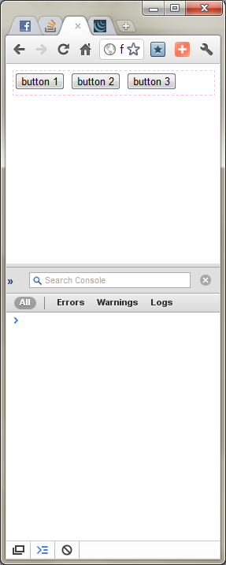
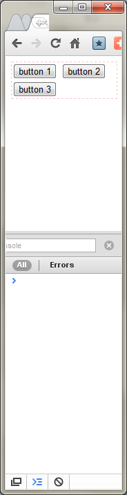

How to detect DIV's dimension changed?
I've the following sample html, there is a DIV which has 100% width. It contains some elements. While performing windows re-sizing, the inner elements may be re-positioned, and the dimension of the div may change. I'm asking if it is possible to hook the div's dimension change event? and How to do that? I currently bind the callback function to the jQuery resize event on the target DIV, however, no console log is outputted, see below:

<html> <head> <script type="text/javascript" language="javascript" src="http://code.jquery.com/jquery-1.6.1.min.js"></script> <script type="text/javascript" language="javascript"> $('#test_div').bind('resize', function(){ console.log('resized'); }); </script> </head> <body> <div id="test_div" style="width: 100%; min-height: 30px; border: 1px dashed pink;"> <input type="button" value="button 1" /> <input type="button" value="button 2" /> <input type="button" value="button 3" /> </div> </body> </html>
Answer
There is a very efficient method to determine if a element's size has been changed.
http://marcj.github.io/css-element-queries/
This library has a class ResizeSensor which can be used for resize
detection.
It uses an event-based approach, so it's damn fast and doesn't waste CPU time.
Example:
new ResizeSensor(jQuery('#divId'), function(){
console.log('content dimension changed');
});
Please do not use the jQuery onresize plugin as it uses setTimeout() in
combination with reading the DOM clientHeight/clientWidth properties in a
loop to check for changes.
This is incredible slow and inaccurate since it causes layout thrashing.
Disclosure: I am directly associated with this library.
Suggest
There is a very efficient method to determine if a element's size has been changed.
http://marcj.github.io/css-element-queries/
This library has a class ResizeSensor which can be used for resize
detection.
It uses an event-based approach, so it's damn fast and doesn't waste CPU time.
Example:
new ResizeSensor(jQuery('#divId'), function(){
console.log('content dimension changed');
});
Please do not use the jQuery onresize plugin as it uses setTimeout() in
combination with reading the DOM clientHeight/clientWidth properties in a
loop to check for changes.
This is incredible slow and inaccurate since it causes layout thrashing.
Disclosure: I am directly associated with this library.